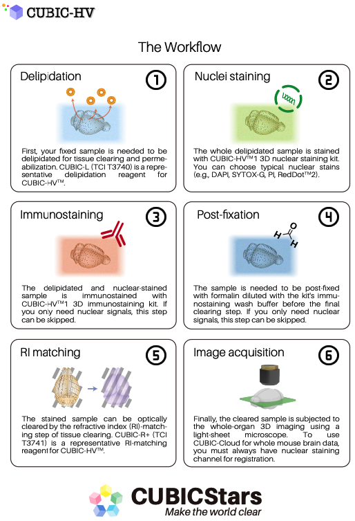
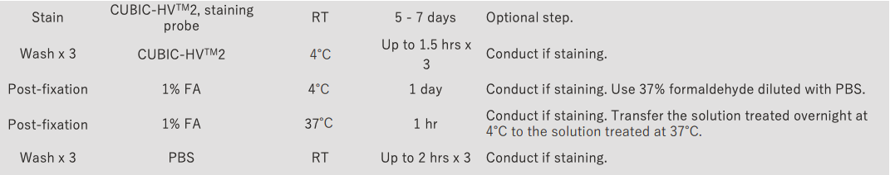

Cubic HV
Comprehensive guide to using
Cubic HV Staining
Protocol
from: cubicstars.com
Introduction
- Stain bulky specimens uniformly. (Includes two nuclear stains and an antibody control)
- CUBIC-L [T3740] and CUBIC-R+(M) [T3741] (sold separately) required for upstream.
Product line ups
Original
The first cubic HV line up are:
CUBIC-HV™1 3D immunostaining kit. 1kit [C3708]
- 2 x Immunostaining Buffer (for 10 tests)
- 1 x Immunostaining Washing Buffer (for 10 tests)
- 10 x Immunostaining Additive (for 10 tests)
- Anti-NeuN Mouse IgG1 Antibody (1mg/mL) (for 2 tests)
- 10 packs of 15mL tube
CUBIC-HV™1 3D nuclear staining kit 1kit [C3709]
- 1 x 3D Nuclear Staining Buffer (for 10 tests)
- 100 x 3D Nuclear Staining Washing Buffer (for 10 tests)
- 200 x DAPI 2HCl (1mg/mL in Water) [for Cell Staining] (for 10 tests)
- 100 x Propidium Iodide (1mg/mL in Water) [for Cell Staining] (for 10 tests)
- 10 packs of 5mL tube
Reference E. A. Susaki, H. R. Ueda, et al., Nat. Commun. 2020, 11, 1982. https://doi.org/10.1038/s41467-020-15906-5
New releases
Now (2023/07/26) seems like there is a new line up:
CUBIC-HV™2 3D tissue staining kit[CSSR003]
- Kit contents (10tests/kit)
-
- Pre-wash buffer
- 1Staining buffer
- Additive A~F
- Wrapping reagent
- Wash Buffer
- Supplement for Staining buffer
- Price
-
(tax and shipping fee are not included) 990USD
CUBIC-HV™2 3D tissue staining kit (starter)[CSSR004]
- Kit contents (10tests/kit)
-
- Pre-wash buffer
- 1Staining buffer
- Additive A~F
- Wrapping reagent
- Wash Buffer
- Supplement for Staining buffer
- Staining pot
- Price
-
(tax and shipping fee are not included) 1580USD
3D tissue staining pot for CUBIC-HV™2[CSSR005]
- Kit contents (10tests/kit)
-
- Staining pot
- Price
-
(tax and shipping fee are not included) 590USD
CUBIC-HVTM1
Original Protocol

3D staining protocol (version 2020.07) [for a whole mouse brain] ref: link here.
MATERIALS
Reagents in kit
- CUBIC-HVTM1 3D nuclear staining buffer (1x) (Store at room temperature)
- CUBIC-HVTM1 3D immunostaining buffer (2x) (Store at 4°C; Use within 6 months)
- CUBIC-HVTM1 3D immunostaining wash buffer (1x) (Store at room temperature; cooled to 4°C when in use)
- CUBIC-HVTM1 3D immunostaining additive (10x) (included in CUBIC-HVTM1 3D immunostaining kit; Store at room temperature, protected from light)
Other reagents
- PBS (Tablet): TaKaRa #T9181
- HEPES: Tokyo Chemical Industry #H0396
- Sodium azide (NaN3): nacalai tesque #31208-82
- Paraformaldehyde: nacalai tesque #02890-45
- Formalin solution: Tokyo Chemical Industry #F0622
- Heparin: FUJIFILM Wako #081-00136
- CUBIC-L: Tokyo Chemical Industry #T3740
- CUBIC-R+: Tokyo Chemical Industry #T3741
Reagents required for the optional enzyme reaction
- CAPSO: Sigma #C2278
- Sodium chloride (NaCl): nacalai tesque #31319-45
- Hyaluronidase: Sigma #H4272 or Sigma #H3884
- BSA: Sigma #A7906
- Sodium carbonate (Na2CO3): nacalai tesque #31310-35
- Sodium hydrogen carbonate (NaHCO3): nacalai tesque #31212-25
- TritonX-100: nacalai tesque #12967-45
- MeOH: nacalai tesque #21915-93
Nuclear staining reagents
- DAPI (included in CUBIC-HVTM1 3D nuclear staining kit)
- BOBO™-1 Iodide: ThermoFisher Scientific B358
- SYTOX™ Green Nucleic Acid Stain: ThermoFisher Scientific S7020
- Propidium Iodide (PI) (included in CUBIC-HVTM1 3D nuclear staining kit)
- RedDot™2 Far-Red Nuclear Stain: Biotium #40061
Antibodies
Primary antibody According to the user’s purpose* *CUBICStars provides technical notes for a validated antibody. See our website ( https://www.cubicstars.com/cubic-hv/index.html ) or email at for request)
The use of antibody products with a concentration of 250 µg/mL or higher isrecommended.
Secondary antibody FabuLight Fc specific Fab fragment (Jackson Immunolab) https://www.jacksonimmuno.com/catalog/31#target:15
Alexa FluorTM 488 is not compatible with CUBIC-R+.
Cy3, Alexa FluorTM 594 and 647 havebeen validated.
Containers to be used
- Protein LoBind 500 µL tube: Eppendorf #022431064
- 5 mL tube (included in CUBIC-HVTM1 3D nuclear staining kit)
- 15 mL standing tube (included in CUBIC-HVTM1 3D immunostaining kit)
- 30 mL tube: SARSTEDT #60.544
- 50 mL tube: Falcon #352070
Process outline
Perfusion fixation and dissection of the mouse brain
Post-fix
~24 hWash (PBS)
2 h x3Delipidation (CUBIC-L)
3~7 daysWash (PBS)
2 h x3Nuclear staining (HVTM1 3D nuclear staining buffer)
3~5 daysWash (3D nuclear staining wash buffer)
2 h x3(If antibody staining is not required, skip the following steps and proceed to RI matching）
=== Optional process (start) ===
Exchange with the hyaluronidase reaction buffer
2 h ~Enzyme reaction (Hyaluronidase)
24 hWash (Hyaluronidase wash buffer)
2 h x3=== Optional process (end) ===
Primary antibody + secondary antibody reaction / Replacement with HVTM1 3D immunostaining buffer
1.5 hImmunostaining [HVTM1 3D immunostaining buffer with HVTM1 additive (if required)]
1 week~ (up to the selected primary Ab)Reaction at 4°C
1 dayWash (HVTM1 3D immunostaining wash buffer)
2 h x3Post-fix
1 dayWash (PBS)
2 hRI matching (CUBIC-R+)
~3 daysMicroscopic observation
Process details
- Reagent volume and reaction time are indicated for staining a single whole mouse brain. It is required to adjust the volume and reaction time according to sample size.
- All shaking steps except for enzyme reaction, immunostaining, and 4°C reaction are performed with the tube in the horizontal position.
- Brain samples after delipidation are easily damaged and should be handled with a metal spoon.
Collection of mouse brain*
Anesthetize the mouse with an overdose of pentobarbital sodium salt (nacalai tesque #02095- 04) in PBS or saline.
Transcardially perfuse with 10 mL (4 mL/min) of cold heparin-PBS (+10 U/mL Heparin).
Transcardially perfuse 20 mL (6 mL/min) of cold 4% (w/v) paraformaldehyde.
Dissect the brain from the skull.
Post-fix the dissected brain in 4% (w/v) PFA in PBS (~10 mL/whole brain) for overnight (8-24 h) at 4°C with gentle shaking (40-50 rpm/min).
Wash the sample in PBS (+0.05% NaN3) for 3 h x 3 times at room temperature with gentle shaking (40-50 rpm/min).
*Refer to Susaki et al. Nature Protocol 10:1709–1727 (2015) for details.
Delipidation
Immerse the fixed sample in 10 mL of 0.5x CUBIC-L (1:1 dilution with distilled water) in the 30 mL tube and incubate it for overnight at room temperature with gentle shaking (40-50 rpm/min).
Replace to 10-15 mL of 1x CUBIC-L in the 30 mL tube and delipidate for 3-5 days* at 37°C with gentle shaking (40-50 rpm/min).
*If the CUBIC-L treatment is more than 3 days, replace with a new CUBIC-L every 2 to 3 days.
Wash the sample with 20 mL of PBS (+0.05% NaN3) for 2 h x 3 times (or 2 h x1, overnight x1, 2 h x1) at 37°C with gentle shaking (40-50 rpm/min).
[NOTE] The tubes should be washed or replaced each time to intensively remove Triton X-100.
3D nuclear staining
Dilute either of nuclear stains in 3-4 mL of 1x HVTM1 3D nuclear staining buffer in the 5 mL tube.
DAPI: 1/200
BOBO-1: 1/400
SYTOX-G: 1/2500
PI: 1/100
RedDot2: 1/250Immerse the sample in 1x HVTM1 3D nuclear staining buffer containing either of the stains. Incubate the tube with rotation (4-5 rpm) at 37°C for the following periods, protected from light.
DAPI: 5 days
BOBO-1: 5 days
SYTOX-G: 5 days
PI: 3 days
RedDot2: 3 days
[NOTE] Increase the volume over 4 mL when the staining depth and signal intensity are insufficient.Wash the sample with 15 mL of 3D nuclear staining wash buffer in the 30 mL tube protected from light for 2 h x 3 times at 25°C with gentle shaking (40-50 rpm/min).
[NOTE] If the following antibody staining is not required, proceed to 8) RI matching.
=== Optional process (start) ===
Enzyme reaction
- Immerse the sample in 15 mL of hyaluronidase reaction buffer in the 30 mL tube protected from light for overnight at 4°C with gentle shaking (40-50 rpm/min). (or for 2 h at 37°C)
- Prepare enzyme solution by mixing 75 µL of 20 mg/mL hyaluronidase stock into 425 µL of reaction buffer (final 3 mg/mL in 500 µL).
- Immerse the sample in the 500 µL of enzyme solution in the 15 mL standing tube protected from light for 24 h at 37°C with gentle shaking (40-50 rpm/min).
Note- To avoid damage, put the brain so that the dorsal side comes to the bottom of the tube.
- Some antibodies are not compatible with the hyaluronidase reaction. Alternatively, Collagenase P can be used (see Nature Communications 2020 for details).
- Wash the sample in 15 mL of hyaluronidase wash buffer in the 30 mL tube protected from light for 2 h x 3 times at 37°C with gentle shaking (40-50 rpm/min).
=== Optional process (end) ===
Preparation for 3D immunostaining
Start the following preparatory tasks (1) and (2) 1.5 h prior to the staining procedure.
Primary antibody + secondary antibody reaction
- Calculate the required amount (X, Y) of primary and secondary (Fab) antibodies.
Primary antibody: 5 µg/whole brain
*For 1 mg/mL product, X = 5/1 = 5 µL
Secondary antibody: anti-Fc Fab, 3.75 µg/whole brain (1:0.75 as the weight ratio)
*For 1.5 mg/mL product, Y = 3.75/1.5 = 2.5 µL
NoteThe amount of primary antibody should be determined for each application.
The amount of secondary antibody should be adjusted according to the degree of noise and signal intensity.
- Mix X µL of primary antibody and Y µL of secondary antibody in the Protein LoBind 500 µL tube.
Incubate it protected from light for 1.5 h at 37°C.
- Calculate the required amount (X, Y) of primary and secondary (Fab) antibodies.
Exchange the immersion media with HVTM1 3D immunostaining buffer.
Prepare 1x HVTM1 3D immunostaining buffer as follows:
2x HVTM1 3D immunostaining buffer 7.5 mL Distilled water 7.5 mL Total 15 mL Immerse the sample in 15 mL of 1x HVTM1 3D immunostaining buffer in the 30 mL tube. Incubate it protected from light for 1.5 h at a specific staining temperature for the antibody with gentle shaking (40-50 rpm/min).
NoteA staining temperature of 32°C is generally used. Depending on the antibody, 25°C (room temperature) or 37°C may be optimal.
3D Immunostaining
Prepare antibody staining solution (500 µL per whole brain) as follows:
2x HVTM1 3D immunostaining buffer 250 µL (final 1x) 10x HVTM1 additive 50 µL (final 1x) Distilled water 200-(X+Y) µL Add the entire volume to the 500 µL tube containing an X+Y µL antibody mixture.
Transfer the mixed antibody staining solution into the 15 mL standing tube and immerse the buffer-exchanged sample. Incubate it protected from light for 1 week~ at 32°C with gentle shaking (40-50 rpm/min).
Note[ ] Shake the tube in an upright position as during the staining.
[ ] To avoid damage, put the brain so that the dorsal side comes to the bottom of the tube.
[ ] Close the lid tightly and wrap the parafilm to prevent evaporation.
[ ] Staining period should be determined for each antibody.
[ ] The amount of HVTM1 additive should be adjusted for each antibody.To stabilize the 2nd Fab signals, gently shake the staining tube protected from light with a shaker (40-50 rpm/min) for a further 24 h at 4°C.
Note[ ] Shake the tube in an upright position as during the staining.
[ ] If the primary antibody shows a non-specific staining signal at 4°C, this step should be skipped.Wash the sample in 15 mL of pre-cooled 1x HVTM1 3D immunostaining wash buffer in the 30 mL tube protected from light for 30 min x 2 times at 4°C with gentle shaking (40-50 rpm/min).
Note[ ] To stabilize the binding of Fab antibodies and reduce the non-specific signal, make the reagents cooled to 4°C prior to washing and post-staining fixation operations.
[ ] In the case that the above 4°C reaction is skipped, wash the sample at the immunostaining temperature.
Post-fixation
Prepare the fixative solution by diluting the saturated formalin (FA) product to the final 1% in 1x HVTM1 3D immunostaining wash buffer and cool it to 4°C.
Note[ ] The saturated formalin solution contains 35 to 38% formalin. For example, when you use a 37% formalin solution, dilute it with 1x HVTM1 3D immunostaining wash buffer at a ratio of 1:36.
Immerse the sample in 8 mL of 1% FA in the 15 mL standing tube protected from light for 24 h at 4°C with gentle shaking (40-50 rpm/min).
To accelerate the fixation reaction, further incubate the sample in 1% FA protected from light for 1 h at 37°C with gentle shaking (40-50 rpm/min).
Wash the sample in 15 mL of PBS in a 30 mL tube protected from light for 2 h at 25°C with gentle shaking (40-50 rpm/min)
RI matching
Immerse the sample in 15 mL of 0.5x CUBIC-R+ (1:1 diluted with water) in the 30 mL tube protected from light for 24 h at 25°C with gentle shaking (40-50 rpm/min).
Exchange with 15 mL (or 30 mL if gel embedding is performed) of 1x CUBIC-R+ for 2 days at 25°C with gentle shaking (40-50 rpm/min).
Use for microscopic observation (embed the sample in gel if necessary).
---
https://www.cubicstars.com/cubic-lr/index.html
---
Staining video
3D nuclear staining and immunostaining steps by CUBIC-HVTM1 kits
(for brain tissue)
CUBIC-HV™2
ref: Guide book
Process outline:

Process details: